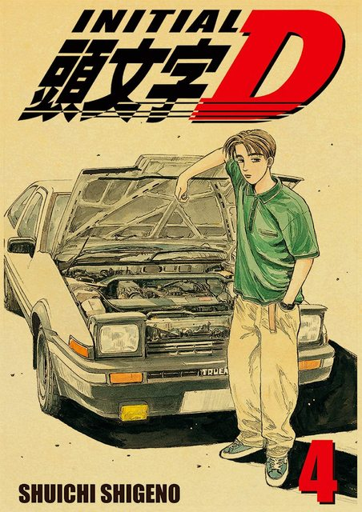

Initial D cuenta la historia de Takumi Fujiwara, un chico que no tiene ni el minimo interes por los autos pero casualmente trabaja en una gasolinera, donde se encuentran sus tres amigos mas cercanos: Itsuki, Iketani y Kenji. Estos tres amigos son amantes de los coches y se sienten decepcionados por el desinteres de Takumi hacia el mundo automotor pero lo que ellos no saben es que Takumi es una caja de sorpresas
